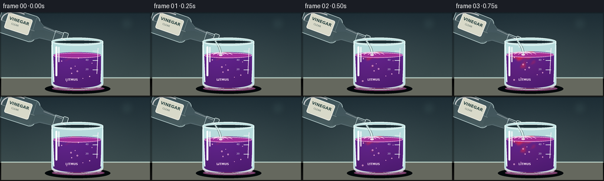
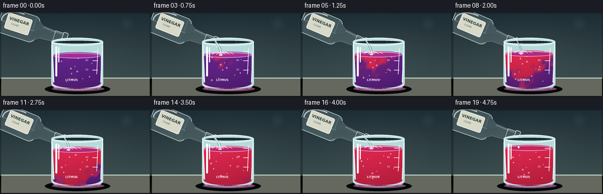

CODING AGENTS AS PIXEL WORLD MODELS
traex/GPT-5.6-Sol · phygen_146
点击播放 · 原生 RGB 像素
逐轮保存的候选
回放视频、检查图与代码变化。
每份候选均可单独播放。实际图片检查记录在下方工具轨迹中。
候选 01播放与检查图
点击播放 · 原生 RGB 像素


展开代码变化
--- 上一保存版本
+++ 本次保存版本
@@ -0,0 +1,245 @@
+from pathlib import Path
+import math
+import numpy as np
+from PIL import Image, ImageDraw, ImageFont, ImageFilter
+import artifact_io
+
+# Deterministic procedural rendering, supersampled for clean antialiasing.
+W, H, N = 256, 144, 20
+S = 4
+WS, HS = W*S, H*S
+rng = np.random.default_rng(146)
+
+
+def font(size, bold=False):
+ paths = [
+ "/usr/share/fonts/truetype/dejavu/DejaVuSans-Bold.ttf" if bold else "/usr/share/fonts/truetype/dejavu/DejaVuSans.ttf",
+ "/usr/share/fonts/truetype/liberation2/LiberationSans-Bold.ttf" if bold else "/usr/share/fonts/truetype/liberation2/LiberationSans-Regular.ttf",
+ ]
+ for p in paths:
+ try:
+ return ImageFont.truetype(p, size*S)
+ except OSError:
+ pass
+ return ImageFont.load_default()
+
+
+def sc(v):
+ if isinstance(v, (tuple, list)):
+ return tuple(int(round(x*S)) for x in v)
+ return int(round(v*S))
+
+
+def smoothstep(a, b, x):
+ x = np.clip((x-a)/(b-a), 0, 1)
+ return x*x*(3-2*x)
+
+
+def rounded(draw, box, radius, fill, outline=None, width=1):
+ draw.rounded_rectangle(sc(box), radius=sc(radius), fill=fill, outline=outline, width=sc(width))
+
+
+def make_background():
+ yy, xx = np.mgrid[0:HS, 0:WS]
+ # Cool laboratory wall with a gentle vignette and tabletop.
+ top = np.array([29., 45., 53.])
+ bot = np.array([61., 78., 79.])
+ t = np.clip(yy/(HS*.84), 0, 1)[..., None]
+ arr = top*(1-t) + bot*t
+ radial = np.sqrt(((xx-WS*.51)/(WS*.73))**2 + ((yy-HS*.43)/(HS*.8))**2)
+ arr += np.clip(.58-radial, 0, .58)[..., None]*13
+ noise = rng.normal(0, 0.85, (HS,WS,1))
+ arr += noise
+ arr = np.clip(arr,0,255).astype(np.uint8)
+ im = Image.fromarray(arr, 'RGB')
+ # Defocused lab lights and wall seams.
+ glow = Image.new('RGBA',(WS,HS),(0,0,0,0)); gd=ImageDraw.Draw(glow)
+ for x,y,r,c in [(215,19,12,(156,211,203,28)),(34,42,8,(193,225,216,22)),(192,65,6,(133,196,193,18))]:
+ gd.ellipse(sc((x-r,y-r,x+r,y+r)),fill=c)
+ glow=glow.filter(ImageFilter.GaussianBlur(sc(7)))
+ im=Image.alpha_composite(im.convert('RGBA'),glow)
+ d=ImageDraw.Draw(im,'RGBA')
+ d.line(sc((0,111,256,111)),fill=(154,180,174,33),width=sc(1))
+ # bench gradient overlay
+ d.rectangle(sc((0,112,256,144)),fill=(39,48,47,255))
+ for y in range(112,144):
+ a=int(22*(y-112)/32)
+ d.line(sc((0,y,256,y)),fill=(101,104,94,a),width=sc(1))
+ d.line(sc((0,112,256,112)),fill=(190,207,193,75),width=sc(1))
+ return im
+
+BACKGROUND = make_background()
+
+
+def bottle_sprite():
+ # A horizontal clear bottle; rotated when composited.
+ bw,bh=124*S,58*S
+ im=Image.new('RGBA',(bw,bh),(0,0,0,0)); d=ImageDraw.Draw(im,'RGBA')
+ # soft shadow inside clear glass
+ d.rounded_rectangle((2*S,6*S,70*S,52*S),radius=10*S,fill=(172,210,210,58),outline=(220,243,240,205),width=1*S)
+ d.polygon([(62*S,8*S),(77*S,18*S),(101*S,20*S),(101*S,38*S),(77*S,40*S),(62*S,50*S)],fill=(173,210,211,54),outline=(223,244,241,190))
+ d.rectangle((99*S,19*S,116*S,39*S),fill=(168,206,208,45),outline=(225,246,245,210),width=S)
+ d.rounded_rectangle((113*S,17*S,122*S,41*S),radius=2*S,fill=(173,211,210,38),outline=(235,251,248,220),width=S)
+ # colorless vinegar level and meniscus
+ d.rounded_rectangle((5*S,30*S,67*S,49*S),radius=7*S,fill=(194,225,221,49))
+ d.polygon([(63*S,31*S),(78*S,25*S),(99*S,25*S),(99*S,37*S),(78*S,37*S),(63*S,47*S)],fill=(196,229,224,42))
+ d.line((7*S,31*S,65*S,31*S),fill=(231,248,244,105),width=S)
+ # label
+ d.rounded_rectangle((14*S,14*S,57*S,42*S),radius=3*S,fill=(236,235,216,230),outline=(255,255,246,240),width=S)
+ f=font(7,True)
+ tw=d.textbbox((0,0),'VINEGAR',font=f)[2]
+ d.text(((35.5*S-tw/2),19*S),'VINEGAR',font=f,fill=(46,72,69,255))
+ f2=font(4,False)
+ d.text((24*S,29*S),'CLEAR',font=f2,fill=(77,97,91,220))
+ # glass highlights
+ d.arc((5*S,8*S,67*S,48*S),170,278,fill=(255,255,255,185),width=2*S)
+ d.line((78*S,20*S,111*S,22*S),fill=(255,255,255,150),width=S)
+ return im
+
+BOTTLE=bottle_sprite()
+
+
+def paste_rotated_bottle(im, angle, xy):
+ rot=BOTTLE.rotate(-angle,resample=Image.Resampling.BICUBIC,expand=True)
+ im.alpha_composite(rot,(int(xy[0]*S),int(xy[1]*S)))
+
+
+def liquid_image(frame, top_y):
+ # Field-based reaction: acid arrives near impact, curls downward, then homogenizes red.
+ yy,xx=np.mgrid[0:HS,0:WS]
+ X=xx/S; Y=yy/S
+ p=np.clip((frame-1)/17,0,1)
+ xn=(X-121)/43
+ yn=np.clip((Y-top_y)/(123-top_y),0,1)
+ travel=.48*yn+.36*np.abs(xn)
+ turbulence=(.055*np.sin(yn*16 + frame*.43 + xn*4.2)
+ +.040*np.sin(xn*11-yn*8-frame*.25)
+ +.026*np.cos((xn+yn)*19+frame*.31))
+ front=p*1.18-travel+turbulence
+ mix=smoothstep(-.12,.16,front)
+ # Bright descending acid plume and two recirculating curls.
+ plume=np.exp(-((X-(120+5*np.sin(yn*9+frame*.28))) /(5.0+13*yn+12*p))**2)
+ plume*=smoothstep(0,.86,p*1.55-yn*.80)
+ curl1=np.exp(-(((X-(131+13*np.sin(frame*.18))) /18)**2 + ((Y-(91+16*p))/19)**2))
+ curl2=np.exp(-(((X-(107-8*np.sin(frame*.21))) /20)**2 + ((Y-(105-6*p))/15)**2))
+ mix=np.clip(np.maximum(mix, .68*plume*p + .40*curl1*p + .30*curl2*p),0,1)
+ # Timelapse eventually gives a mostly uniform red acid endpoint.
+ mix=np.maximum(mix,smoothstep(.68,1.0,p)*.94)
+ purple=np.array([87.,29.,126.]); red=np.array([202.,32.,67.])
+ col=purple[None,None,:]*(1-mix[...,None])+red[None,None,:]*mix[...,None]
+ # Internal highlights and depth, maintaining saturated indicator color.
+ depth=np.clip((Y-top_y)/(126-top_y),0,1)
+ col*= (1.08-.20*depth[...,None])
+ central=np.exp(-((X-112)/31)**2)*.13
+ col += central[...,None]*np.array([37.,28.,42.])
+ # Reaction boundary is slightly pink, increasing visual legibility.
+ boundary=np.exp(-((mix-.53)/.17)**2)*p
+ col += boundary[...,None]*np.array([27.,15.,17.])
+ col=np.clip(col,0,255).astype(np.uint8)
+ layer=Image.fromarray(col,'RGB').convert('RGBA')
+ mask=Image.new('L',(WS,HS),0); md=ImageDraw.Draw(mask)
+ md.rectangle(sc((90,top_y,171,119)),fill=244)
+ md.ellipse(sc((90,111,171,129)),fill=244)
+ md.ellipse(sc((90,top_y-5,171,top_y+5)),fill=252)
+ layer.putalpha(mask)
+ return layer,mix
+
+
+def render(frame):
+ im=BACKGROUND.copy()
+ p=np.clip((frame-1)/17,0,1)
+ # bottle subtly tips further during active pour, then eases upward near the end.
+ angle=18 + 5*min(1,frame/4) - 4*max(0,(frame-15)/4)
+ bx=-12; by=-18
+ paste_rotated_bottle(im,angle,(bx,by))
+ d=ImageDraw.Draw(im,'RGBA')
+ # Grounded beaker shadow and caustic.
+ d.ellipse(sc((76,122,187,139)),fill=(2,8,10,95))
+ d.ellipse(sc((88,126,177,134)),fill=(126,66,111,28))
+ # Back face of the clear beaker.
+ d.rounded_rectangle(sc((87,48,175,129)),radius=sc(9),fill=(182,218,219,16),outline=(212,239,237,115),width=sc(1))
+ d.ellipse(sc((87,43,175,57)),fill=(178,217,218,22),outline=(222,243,240,185),width=sc(2))
+ d.ellipse(sc((91,47,171,54)),fill=(28,47,53,120),outline=(245,255,252,82),width=sc(1))
+ top_y=73-7.5*p
+ liquid,mix=liquid_image(frame,top_y)
+ im=Image.alpha_composite(im,liquid)
+ d=ImageDraw.Draw(im,'RGBA')
+ # Surface meniscus: dynamic ripples around impact.
+ surf_col=(161+int(35*p),46-int(9*p),154-int(65*p),225)
+ d.ellipse(sc((90,top_y-4,171,top_y+5)),fill=surf_col,outline=(235,167,221,105),width=sc(1))
+ active=frame>=1 and frame<=16
+ if active:
+ impact_x=117.5+1.4*math.sin(frame*.45)
+ # concentric surface waves
+ for k in range(3):
+ rr=5+k*7 + (frame%4)*1.1
+ d.arc(sc((impact_x-rr,top_y-2.0-rr*.14,impact_x+rr,top_y+2.0+rr*.14)),185,350,
+ fill=(255,206,238,max(25,115-k*30)),width=sc(1))
+ d.ellipse(sc((impact_x-3.2,top_y-1.6,impact_x+3.2,top_y+1.6)),fill=(245,218,237,140))
+ # Rising microbubbles and pale curling traces inside solution.
+ for j in range(11):
+ seed=(j*37+13)%97
+ bxub=100+(seed%58)+2.2*math.sin(frame*.37+j)
+ byub=118-((frame*2.1+j*8.7)%47)
+ if byub>top_y+4:
+ r=.55+(j%3)*.35
+ alpha=80 if frame<17 else 42
+ d.ellipse(sc((bxub-r,byub-r,bxub+r,byub+r)),outline=(255,188,222,alpha),width=sc(.65))
+ # Foreground glass sides, base thickness, highlights.
+ d.line(sc((88,51,91,119)),fill=(230,248,246,150),width=sc(2))
+ d.line(sc((174,51,171,119)),fill=(221,244,243,133),width=sc(2))
+ d.arc(sc((89,113,173,131)),3,177,fill=(255,210,231,75),width=sc(1))
+ d.arc(sc((89,116,173,132)),0,180,fill=(222,242,239,174),width=sc(2))
+ d.arc(sc((89,119,173,131)),0,180,fill=(109,43,91,135),width=sc(1))
+ # Specular streaks and reflections.
+ d.rounded_rectangle(sc((94,58,97,109)),radius=sc(1.5),fill=(255,255,255,72))
+ d.rounded_rectangle(sc((99,59,100.5,85)),radius=sc(.8),fill=(255,255,255,44))
+ d.line(sc((166,61,164,105)),fill=(255,240,248,48),width=sc(1))
+ # Beaker graduations and minimal laboratory labeling.
+ for y,val in [(66,'60'),(82,'40'),(98,'20')]:
+ d.line(sc((157,y,166,y)),fill=(231,245,242,135),width=sc(1))
+ if y>=82: d.text(sc((145,y-3)),val,font=font(4),fill=(233,244,242,116))
+ d.text(sc((111,112)),'LITMUS',font=font(5,True),fill=(249,229,241,92))
+ # Colorless stream lies in front of background and behind foremost rim.
+ if active:
+ # mouth is approximately (108,49), stream bends to impact.
+ sx=108+1.2*math.sin(frame*.24); sy=48
+ ex=118+1.4*math.sin(frame*.45); ey=top_y-1
+ stream=Image.new('RGBA',(WS,HS),(0,0,0,0)); sd=ImageDraw.Draw(stream,'RGBA')
+ pts=[]
+ for q in np.linspace(0,1,26):
+ x=(1-q)*sx+q*ex+2.1*math.sin(q*math.pi)
+ y=(1-q)*sy+q*ey
+ pts.append(sc((x,y)))
+ width=2.4 + .65*math.sin(frame*.58)
+ sd.line(pts,fill=(210,240,237,172),width=sc(width),joint='curve')
+ sd.line([(x-sc(.55),y) for x,y in pts],fill=(255,255,255,151),width=sc(.6))
+ stream=stream.filter(ImageFilter.GaussianBlur(sc(.22)))
+ im=Image.alpha_composite(im,stream)
+ d=ImageDraw.Draw(im,'RGBA')
+ # glinting droplets at stream edge
+ if frame%3==0:
+ d.ellipse(sc((111.5,57,113,59.8)),fill=(237,254,251,170))
+ # redraw near rim so stream visibly enters liquid
+ d.arc(sc((90,top_y-4,171,top_y+5)),180,360,fill=(248,221,239,128),width=sc(1))
+ elif frame>16:
+ # A final trailing drop after the pour.
+ drop_y=50+(frame-17)*7
+ if drop_y<top_y:
+ d.ellipse(sc((111.2,drop_y-1.8,114.0,drop_y+2.2)),fill=(226,248,245,160),outline=(255,255,255,150))
+ # Small neck/mouth highlight to connect bottle and stream.
+ d.line(sc((103,44,112,48)),fill=(246,255,253,190),width=sc(1))
+ # cinematic top/bottom vignette
+ vig=Image.new('RGBA',(WS,HS),(0,0,0,0)); vd=ImageDraw.Draw(vig)
+ vd.rectangle((0,0,WS,HS),outline=(0,0,0,65),width=sc(2))
+ im=Image.alpha_composite(im,vig)
+ return np.asarray(im.convert('RGB').resize((W,H),Image.Resampling.LANCZOS),dtype=np.uint8)
+
+
+def main():
+ frames=np.stack([render(i) for i in range(N)],axis=0)
+ artifact_io.save(frames,Path(__file__).resolve().parent)
+ print('saved',frames.shape,frames.dtype)
+
+if __name__=='__main__':
+ main()
可观测工具轨迹
实际执行的命令与返回图片。
命令 1exit 0
/bin/bash -lc 'cat prompt.txt'
命令 2exit 0
/bin/bash -lc 'cat GENERATION_RULES.md'
命令 3exit 0
/bin/bash -lc 'cat task_spec.json'
命令 4exit 0
/bin/bash -lc "find . -maxdepth 2 -type f -printf '%p\\n' | sort && printf '\\nAvailable executables:\\n' && command -v ffmpeg || true; command -v blender || true; command -v python3 || true"
命令 5exit 0
/bin/bash -lc "cat artifact_io.py && python3 - <<'PY'
import PIL,numpy
print('PIL',PIL.__version__,'numpy',numpy.__version__)
PY"命令 6exit 0
/bin/bash -lc "cat > generate.py <<'PY'
from pathlib import Path
import math
import numpy as np
from PIL import Image, ImageDraw, ImageFont, ImageFilter
import artifact_io
# Deterministic procedural rendering, supersampled for clean antialiasing.
W, H, N = 256, 144, 20
S = 4
WS, HS = W*S, H*S
rng = np.random.default_rng(146)
def font(size, bold=False):
paths = [
\"/usr/share/fonts/truetype/dejavu/DejaVuSans-Bold.ttf\" if bold else \"/usr/share/fonts/truetype/dejavu/DejaVuSans.ttf\",
\"/usr/share/fonts/truetype/liberation2/LiberationSans-Bold.ttf\" if bold else \"/usr/share/fonts/truetype/liberation2/LiberationSans-Regular.ttf\",
]
for p in paths:
try:
return ImageFont.truetype(p, size*S)
except OSError:
pass
return ImageFont.load_default()
def sc(v):
if isinstance(v, (tuple, list)):
return tuple(int(round(x*S)) for x in v)
return int(round(v*S))
def smoothstep(a, b, x):
x = np.clip((x-a)/(b-a), 0, 1)
return x*x*(3-2*x)
def rounded(draw, box, radius, fill, outline=None, width=1):
draw.rounded_rectangle(sc(box), radius=sc(radius), fill=fill, outline=outline, width=sc(width))
def make_background():
yy, xx = np.mgrid[0:HS, 0:WS]
# Cool laboratory wall with a gentle vignette and tabletop.
top = np.array([29., 45., 53.])
bot = np.array([61., 78., 79.])
t = np.clip(yy/(HS*.84), 0, 1)[..., None]
arr = top*(1-t) + bot*t
radial = np.sqrt(((xx-WS*.51)/(WS*.73))**2 + ((yy-HS*.43)/(HS*.8))**2)
arr += np.clip(.58-radial, 0, .58)[..., None]*13
noise = rng.normal(0, 0.85, (HS,WS,1))
arr += noise
arr = np.clip(arr,0,255).astype(np.uint8)
im = Image.fromarray(arr, 'RGB')
# Defocused lab lights and wall seams.
glow = Image.new('RGBA',(WS,HS),(0,0,0,0)); gd=ImageDraw.Draw(glow)
for x,y,r,c in [(215,19,12,(156,211,203,28)),(34,42,8,(193,225,216,22)),(192,65,6,(133,196,193,18))]:
gd.ellipse(sc((x-r,y-r,x+r,y+r)),fill=c)
glow=glow.filter(ImageFilter.GaussianBlur(sc(7)))
im=Image.alpha_composite(im.convert('RGBA'),glow)
d=ImageDraw.Draw(im,'RGBA')
d.line(sc((0,111,256,111)),fill=(154,180,174,33),width=sc(1))
# bench gradient overlay
d.rectangle(sc((0,112,256,144)),fill=(39,48,47,255))
for y in range(112,144):
a=int(22*(y-112)/32)
d.line(sc((0,y,256,y)),fill=(101,104,94,a),width=sc(1))
d.line(sc((0,112,256,112)),fill=(190,207,193,75),width=sc(1))
return im
BACKGROUND = make_background()
def bottle_sprite():
# A horizontal clear bottle; rotated when composited.
bw,bh=124*S,58*S
im=Image.new('RGBA',(bw,bh),(0,0,0,0)); d=ImageDraw.Draw(im,'RGBA')
# soft shadow inside clear glass
d.rounded_rectangle((2*S,6*S,70*S,52*S),radius=10*S,fill=(172,210,210,58),outline=(220,243,240,205),width=1*S)
d.polygon([(62*S,8*S),(77*S,18*S),(101*S,20*S),(101*S,38*S),(77*S,40*S),(62*S,50*S)],fill=(173,210,211,54),outline=(223,244,241,190))
d.rectangle((99*S,19*S,116*S,39*S),fill=(168,206,208,45),outline=(225,246,245,210),width=S)
d.rounded_rectangle((113*S,17*S,122*S,41*S),radius=2*S,fill=(173,211,210,38),outline=(235,251,248,220),width=S)
# colorless vinegar level and meniscus
d.rounded_rectangle((5*S,30*S,67*S,49*S),radius=7*S,fill=(194,225,221,49))
d.polygon([(63*S,31*S),(78*S,25*S),(99*S,25*S),(99*S,37*S),(78*S,37*S),(63*S,47*S)],fill=(196,229,224,42))
d.line((7*S,31*S,65*S,31*S),fill=(231,248,244,105),width=S)
# label
d.rounded_rectangle((14*S,14*S,57*S,42*S),radius=3*S,fill=(236,235,216,230),outline=(255,255,246,240),width=S)
f=font(7,True)
tw=d.textbbox((0,0),'VINEGAR',font=f)[2]
d.text(((35.5*S-tw/2),19*S),'VINEGAR',font=f,fill=(46,72,69,255))
f2=font(4,False)
d.text((24*S,29*S),'CLEAR',font=f2,fill=(77,97,91,220))
# glass highlights
d.arc((5*S,8*S,67*S,48*S),170,278,fill=(255,255,255,185),width=2*S)
d.line((78*S,20*S,111*S,22*S),fill=(255,255,255,150),width=S)
return im
BOTTLE=bottle_sprite()
def paste_rotated_bottle(im, angle, xy):
rot=BOTTLE.rotate(-angle,resample=Image.Resampling.BICUBIC,expand=True)
im.alpha_composite(rot,(int(xy[0]*S),int(xy[1]*S)))
def liquid_image(frame, top_y):
# Field-based reaction: acid arrives near impact, curls downward, then homogenizes red.
yy,xx=np.mgrid[0:HS,0:WS]
X=xx/S; Y=yy/S
p=np.clip((frame-1)/17,0,1)
xn=(X-121)/43
yn=np.clip((Y-top_y)/(123-top_y),0,1)
travel=.48*yn+.36*np.abs(xn)
turbulence=(.055*np.sin(yn*16 + frame*.43 + xn*4.2)
+.040*np.sin(xn*11-yn*8-frame*.25)
+.026*np.cos((xn+yn)*19+frame*.31))
front=p*1.18-travel+turbulence
mix=smoothstep(-.12,.16,front)
# Bright descending acid plume and two recirculating curls.
plume=np.exp(-((X-(120+5*np.sin(yn*9+frame*.28))) /(5.0+13*yn+12*p))**2)
plume*=smoothstep(0,.86,p*1.55-yn*.80)
curl1=np.exp(-(((X-(131+13*np.sin(frame*.18))) /18)**2 + ((Y-(91+16*p))/19)**2))
curl2=np.exp(-(((X-(107-8*np.sin(frame*.21))) /20)**2 + ((Y-(105-6*p))/15)**2))
mix=np.clip(np.maximum(mix, .68*plume*p + .40*curl1*p + .30*curl2*p),0,1)
# Timelapse eventually gives a mostly uniform red acid endpoint.
mix=np.maximum(mix,smoothstep(.68,1.0,p)*.94)
purple=np.array([87.,29.,126.]); red=np.array([202.,32.,67.])
col=purple[None,None,:]*(1-mix[...,None])+red[None,None,:]*mix[...,None]
# Internal highlights and depth, maintaining saturated indicator color.
depth=np.clip((Y-top_y)/(126-top_y),0,1)
col*= (1.08-.20*depth[...,None])
central=np.exp(-((X-112)/31)**2)*.13
col += central[...,None]*np.array([37.,28.,42.])
# Reaction boundary is slightly pink, increasing visual legibility.
boundary=np.exp(-((mix-.53)/.17)**2)*p
col += boundary[...,None]*np.array([27.,15.,17.])
col=np.clip(col,0,255).astype(np.uint8)
layer=Image.fromarray(col,'RGB').convert('RGBA')
mask=Image.new('L',(WS,HS),0); md=ImageDraw.Draw(mask)
md.rectangle(sc((90,top_y,171,119)),fill=244)
md.ellipse(sc((90,111,171,129)),fill=244)
md.ellipse(sc((90,top_y-5,171,top_y+5)),fill=252)
layer.putalpha(mask)
return layer,mix
def render(frame):
im=BACKGROUND.copy()
p=np.clip((frame-1)/17,0,1)
# bottle subtly tips further during active pour, then eases upward near the end.
angle=18 + 5*min(1,frame/4) - 4*max(0,(frame-15)/4)
bx=-12; by=-18
paste_rotated_bottle(im,angle,(bx,by))
d=ImageDraw.Draw(im,'RGBA')
# Grounded beaker shadow and caustic.
d.ellipse(sc((76,122,187,139)),fill=(2,8,10,95))
d.ellipse(sc((88,126,177,134)),fill=(126,66,111,28))
# Back face of the clear beaker.
d.rounded_rectangle(sc((87,48,175,129)),radius=sc(9),fill=(182,218,219,16),outline=(212,239,237,115),width=sc(1))
d.ellipse(sc((87,43,175,57)),fill=(178,217,218,22),outline=(222,243,240,185),width=sc(2))
d.ellipse(sc((91,47,171,54)),fill=(28,47,53,120),outline=(245,255,252,82),width=sc(1))
top_y=73-7.5*p
liquid,mix=liquid_image(frame,top_y)
im=Image.alpha_composite(im,liquid)
d=ImageDraw.Draw(im,'RGBA')
# Surface meniscus: dynamic ripples around impact.
surf_col=(161+int(35*p),46-int(9*p),154-int(65*p),225)
d.ellipse(sc((90,top_y-4,171,top_y+5)),fill=surf_col,outline=(235,167,221,105),width=sc(1))
active=frame>=1 and frame<=16
if active:
impact_x=117.5+1.4*math.sin(frame*.45)
# concentric surface waves
for k in range(3):
rr=5+k*7 + (frame%4)*1.1
d.arc(sc((impact_x-rr,top_y-2.0-rr*.14,impact_x+rr,top_y+2.0+rr*.14)),185,350,
fill=(255,206,238,max(25,115-k*30)),width=sc(1))
d.ellipse(sc((impact_x-3.2,top_y-1.6,impact_x+3.2,top_y+1.6)),fill=(245,218,237,140))
# Rising microbubbles and pale curling traces inside solution.
for j in range(11):
seed=(j*37+13)%97
bxub=100+(seed%58)+2.2*math.sin(frame*.37+j)
byub=118-((frame*2.1+j*8.7)%47)
if byub>top_y+4:
r=.55+(j%3)*.35
alpha=80 if frame<17 else 42
d.ellipse(sc((bxub-r,byub-r,bxub+r,byub+r)),outline=(255,188,222,alpha),width=sc(.65))
# Foreground glass sides, base thickness, highlights.
d.line(sc((88,51,91,119)),fill=(230,248,246,150),width=sc(2))
d.line(sc((174,51,171,119)),fill=(221,244,243,133),width=sc(2))
d.arc(sc((89,113,173,131)),3,177,fill=(255,210,231,75),width=sc(1))
d.arc(sc((89,116,173,132)),0,180,fill=(222,242,239,174),width=sc(2))
d.arc(sc((89,119,173,131)),0,180,fill=(109,43,91,135),width=sc(1))
# Specular streaks and reflections.
d.rounded_rectangle(sc((94,58,97,109)),radius=sc(1.5),fill=(255,255,255,72))
d.rounded_rectangle(sc((99,59,100.5,85)),radius=sc(.8),fill=(255,255,255,44))
d.line(sc((166,61,164,105)),fill=(255,240,248,48),width=sc(1))
# Beaker graduations and minimal laboratory labeling.
for y,val in [(66,'60'),(82,'40'),(98,'20')]:
d.line(sc((157,y,166,y)),fill=(231,245,242,135),width=sc(1))
if y>=82: d.text(sc((145,y-3)),val,font=font(4),fill=(233,244,242,116))
d.text(sc((111,112)),'LITMUS',font=font(5,True),fill=(249,229,241,92))
# Colorless stream lies in front of background and behind foremost rim.
if active:
# mouth is approximately (108,49), stream bends to impact.
sx=108+1.2*math.sin(frame*.24); sy=48
ex=118+1.4*math.sin(frame*.45); ey=top_y-1
stream=Image.new('RGBA',(WS,HS),(0,0,0,0)); sd=ImageDraw.Draw(stream,'RGBA')
pts=[]
for q in np.linspace(0,1,26):
x=(1-q)*sx+q*ex+2.1*math.sin(q*math.pi)
y=(1-q)*sy+q*ey
pts.append(sc((x,y)))
width=2.4 + .65*math.sin(frame*.58)
sd.line(pts,fill=(210,240,237,172),width=sc(width),joint='curve')
sd.line([(x-sc(.55),y) for x,y in pts],fill=(255,255,255,151),width=sc(.6))
stream=stream.filter(ImageFilter.GaussianBlur(sc(.22)))
im=Image.alpha_composite(im,stream)
d=ImageDraw.Draw(im,'RGBA')
# glinting droplets at stream edge
if frame%3==0:
d.ellipse(sc((111.5,57,113,59.8)),fill=(237,254,251,170))
# redraw near rim so stream visibly enters liquid
d.arc(sc((90,top_y-4,171,top_y+5)),180,360,fill=(248,221,239,128),width=sc(1))
elif frame>16:
# A final trailing drop after the pour.
drop_y=50+(frame-17)*7
if drop_y<top_y:
d.ellipse(sc((111.2,drop_y-1.8,114.0,drop_y+2.2)),fill=(226,248,245,160),outline=(255,255,255,150))
# Small neck/mouth highlight to connect bottle and stream.
d.line(sc((103,44,112,48)),fill=(246,255,253,190),width=sc(1))
# cinematic top/bottom vignette
vig=Image.new('RGBA',(WS,HS),(0,0,0,0)); vd=ImageDraw.Draw(vig)
vd.rectangle((0,0,WS,HS),outline=(0,0,0,65),width=sc(2))
im=Image.alpha_composite(im,vig)
return np.asarray(im.convert('RGB').resize((W,H),Image.Resampling.LANCZOS),dtype=np.uint8)
def main():
frames=np.stack([render(i) for i in range(N)],axis=0)
artifact_io.save(frames,Path(__file__).resolve().parent)
print('saved',frames.shape,frames.dtype)
if __name__=='__main__':
main()
PY
python3 generate.py
ls -lh pixels.npz inspection.png transition_check.png index.html frames/00.png frames/19.png"命令 7exit 0
/bin/bash -lc 'git status --short 2>/dev/null || true'
命令 8exit 0
/bin/bash -lc "python3 - <<'PY'
from pathlib import Path
import json, numpy as np
from PIL import Image
p=Path('.')
spec=json.loads((p/'task_spec.json').read_text())
z=np.load(p/'pixels.npz')['pixels']
files=sorted((p/'frames').glob('*.png'))
assert z.shape==(spec['height'],spec['width'],spec['frames'])
assert len(files)==spec['frames']
for f in files:
im=Image.open(f)
assert im.mode=='RGB' and im.size==(spec['width'],spec['height'])
# Report temporal differences and coarse indicator-region progression.
a=np.stack([np.asarray(Image.open(f),dtype=np.int16) for f in files])
d=np.abs(np.diff(a,axis=0)).mean(axis=(1,2,3))
roi=a[:,72:122,94:168]
print('pixels tensor:',z.shape,z.dtype)
print('frames:',len(files),'RGB',Image.open(files[0]).size)
print('mean frame deltas:',np.round(d,2).tolist())
print('ROI mean RGB start/middle/end:',*[np.round(roi[i].mean((0,1)),1).tolist() for i in (0,10,19)])
print('artifacts complete:',all((p/x).exists() for x in ['pixels.npz','index.html','inspection.png','transition_check.png','generate.py']))
PY"视觉工具实际返回图片 1

保存候选 1 份；完成命令 8 次；可验证图片返回 1 张。原始 API 响应与完整日志保留在本地。